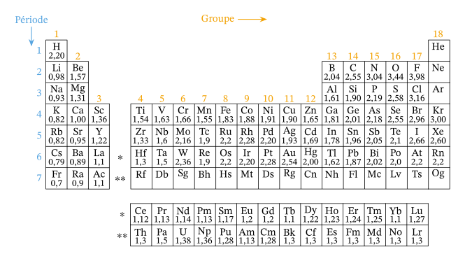
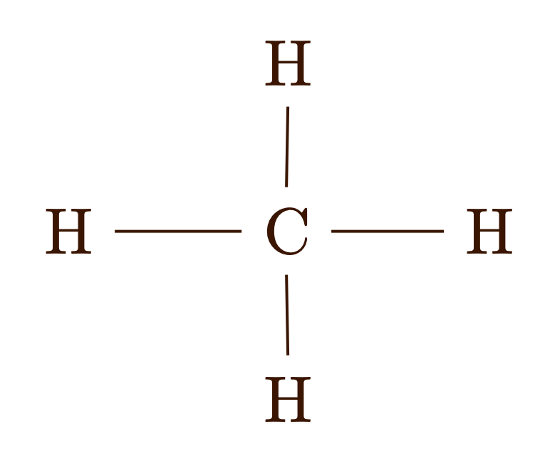
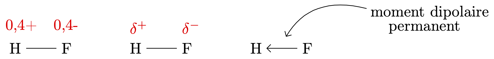
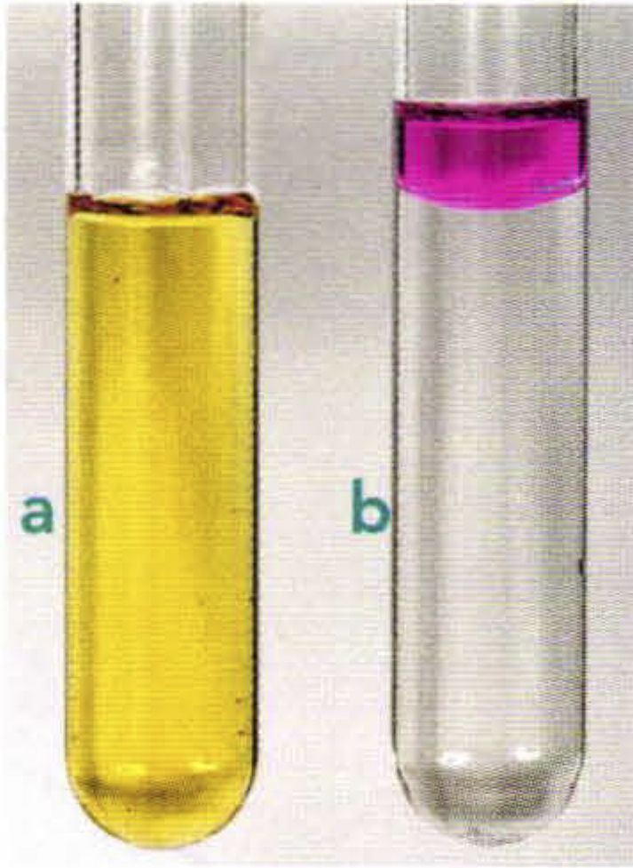

Cohésion des solides ioniques
- Qu’est-ce qu’un solide ionique ?
Réponse
Un solide ionique est un solide constitué d’ions chargés positivement — les cations — et d’ions chargés négativement — les anions.
- Quelle est la caractéristique importante, du point de vue électrique, d’un solide ionique ?
Réponse
Dans un solide ionique les cations et les anions sont en quantités telles que l’édifice est électriquement neutre.
- Qu’est-ce qu’un solide ionique cristallin ?
Réponse
Un solide ionique est dit cristallin si, au niveau microscopique, l’arrangement des ions dans l’espace forme une structure périodique.
- Écrire les formules chimiques des solides ioniques suivants: fluorure de calcium, chlorure de sodium, chlorure de calcium, hydroxyde de cuivre, sulfate de sodium, chlorure de fer III.
Réponse
- fluorure de calcium : $\ce{CaF2 (s)}$ ;
- chlorure de sodium : $\ce{NaCl (s)}$
- chlorure de calcium : $\ce{CaCl2 (s)}$
- hydroxyde de cuivre : $\ce{Cu(OH)2 (s)}$
- sulfate de sodium : $\ce{Na2SO4 (s)}$
- chlorure de fer III : $\ce{FeCl3 (s)}$
- Par convention, on débute toujours le nom d’un solide ionique par celui de l’anion qui le constitue. On ajoute à ce dernier le nom du cation.
- Par convention, on écrit la formule chimique d’un solide ionique en plaçant en premier le cation On lui accole ensuite l’anion.
- Un solide ionique est un isolant électrique (aucune charge électrique ne peut se déplacer dans un tel solide).
Cohésion d’un solide ionique
- Quelle interaction fondamentale est à la base de la cohésion d’un solide ionique ?
Réponse
La cohésion d’un cristal ionique repose sur l’interaction électrostatique entre les anions et les cations (interactions attractives puisque ces édifices possèdent des charges de signes opposés).
Cohésion d’un solide moléculaire
Des édifices électriquement neutres peuvent-ils présenter des propriétés électriques ?
- En quoi le résultat de l’expérience présentée dans la vidéo est-il surprenant ?
Réponse
Un filet d’eau est dévié en présence d’un corps électrisé. Les molécules, édifices électriquement neutres, peuvent donc présenter des propriétés électriques !!!
- La force de Coulomb peut-elle expliquer le comportement décrit à la question précédente ?
Réponse
Une molécule est un édifice électriquement neutre, la force de Coulomb qui décrit l’interaction entre deux charges électriques ne peut pas expliquer le comportement électrique d’une molécule.
Électronégativité des atomes
- Que représente l’électronégativité d’un atome ?
Réponse
- Quel comportement traduit une grande électronégativité ?
Réponse

Évolution de l’électronégativité des atomes dans la classification périodique.
Électronégativité et liaison chimique
Électronégativités identiques ou voisines
- Comment sont partagés les électrons du doublet liant situé entre deux atomes d’électronégativités identiques ou proches ?
Réponse
Les électrons du doublet liant sont répartis équitablement entre les deux atomes liés. Ces atomes ne portent aucune charge partielle.
- Comment peut-on qualifier la liaison covalente entre deux atomes d’électronégativités identiques ou proches : polarisée, non polarisée ?
Réponse
La liaison covalente entre deux atomes d’électronégativités identiques ou proches est dite non polarisée.

Électronégativités différentes
- Comment sont partagés les électrons du doublet liant situé entre deux atomes d’électronégativités différentes ?
Réponse
L’atome d’électronégativité la plus grande attire davantage à lui les électrons du doublet liant que l’atome le moins électronégatif.
- Quelle est la conséquence de la différence d’électronégativité entre les deux atomes sur la densité électronique dans leur environnement ?
Réponse
- La densité électronique autour de l’atome le plus électronégatif est plus importante que lorsqu’il est seul : il présente un excès de charge électrique négative. On dit qu’il porte une charge partielle négative $\delta^-$.
- La densité électronique autour de l’atome le moins électronégatif est moins importante que lorsqu’il est seul : il présente un déficit de charge négative. On dit qu’il porte une charge partielle positive $\delta^+$.
- Comment peut-on qualifier la liaison covalente entre deux atomes d’électronégativités différentes : polarisée, non polarisée ?
Réponse
La liaison covalente entre deux atomes d’électronégativités différentes est dite polarisée.

Électronégativités très différentes
- Comment sont partagés les électrons du doublet liant lorsque les électronégativités entre les deux atomes sont très différentes ?
Réponse
Plus la différence d’électronégativité entre les deux atomes est grande, plus l’atome le plus électronégatif s’accapare la totalité du doublet (qui n’est donc plus liant).
- Quelle est la conséquence de la différence d’électronégativité entre les deux atomes sur la densité électronique dans leur environnement ?
Réponse
L’atome le plus électronégatif porte la charge $-e$. L’atome le moins électronégatif, qui a perdu un électron périphérique, porte la charge $+e$.
- Lorsque les électronégativités des deux atomes sont très différentes, peut-on toujours parler de liaison covalente ?
Réponse
Plus la différence d’électronégativité entre les deux atomes est grande, plus la liaison se rapproche d’une liaison ionique et perd son caractère covalent.
Résumé
| Type de liaison | Différence d’électronégativité | Exemples de molécules |
|---|---|---|
| Covalente pure | 0 | Dihydrogène gazeux $\ce{H2}$ |
| Covalente non polarisée | Inférieure à 0,4 | Méthane $\ce{CH4}$ |
| Covalente polarisée | Entre 0,4 et 1,7 | Fluorure d’hydrogène $\ce{HF}$ |
| Ionique | Supérieure à 1,7 | Fluorure de sodium $\ce{NaF}$ |
Consulter cette page pour de plus amples informations
Molécules polaires, molécules apolaires
-
Une molécule est dite polaire si elle comporte une ou plusieurs liaisons polarisées et si sa géométrie est telle que le barycentre (ou point d’équilibre) des charges électriques négatives ne coïncide pas avec le barycentre des charges électriques positives.
-
Une molécule est dite apolaire si elle ne comporte aucune liaison polarisée ou si sa géométrie est telle que le barycentre (ou point d’équilibre) des charges électriques négatives coïncide avec le barycentre des charges électriques positives.
L’eau est une molécule polaire. Le dioxyde de carbone n’est pas une molécule polaire car les barycentres des charges positive et négative coïncident.
Remarque
Le caractère polaire envisagé dans cette partie est permanent (dans la section suivante nous verrons qu’il est possible d’induire un caractère polaire pendant une brève durée dans le temps).
- La molécule d’ammoniac est-elle polaire ?
Caractère polaire ou apolaire des solvants
- L’eau est-elle un solvant polaire ?
Réponse
Le solvant eau est constitué de molécules d’eau, polaires. C’est donc un solvant polaire.
- Un solvant organique dont les molécules comportent un ou plusieurs atomes très électronégatifs, comme l’azote N, l’oxygène O, le fluor F ou le chlore Cl, est-il généralement polaire ?
Réponse
Si la chaîne carbonnée n’est pas trop longue, une molécule organique comportant des atomes électronégatifs, tels que l’azote N, l’oxygène O, le fluor F ou le chlore Cl est polaire. Tout solvant constitué de telles molécules est donc polaire.
- Un solvant organique hydrogénocarboné, constitués de molécules ne comportant que des atomes de carbone ou d’hydrogène, est-il polaire ?
Réponse
Un hydrocarbure est une molécule apolaire puisqu’aucune des laisons n’est polarisée. Les solvants organiques sont donc généralement apolaires.
Cohésion des solides moléculaires
-
De nombreux solides ne sont pas ioniques. Ils sont constitués de molécules. Si ces molécules sont rangées de façon ordonnée ce solide est dit cristallin (exemple : le diiode). Dans le cas contraire, il est dit amorphe (exemple : le plexiglass).
-
Les interactions entre ces molécules sont de 2 types : interactions de Van der Waals et liaisons hydrogène.
Les interactions de Van Der Waals
En se rapprochant de la molécule d’eau, polaire, la molécule de dichlore se polarise par influence car le nuage électronique de $\ce{Cl2}$ se déforme/déplace.
La liaison hydrogène
Remarque
Les liaisons hydrogène sont à la base de la cohésion de l’eau solide ou de l’eau liquide.
Dissolution dans un solvant
Dissolution et interactions
Étapes successives (pour un composé ionique)
On peut décomposer le phénomène de dissolution d’un soluté dans un solvant en trois étapes successives :
Dissociation du solide ionique
Les forces électrostatiques entre les ions à la surface du solide et les charges partielles du solvant (qui doit donc être polaire) affaiblissent les forces électrostatiques entre les ions, au sein du solide.
Hydratation (ou solvatation) des ions
Les molécules du solvant, attirées par l’interaction électrostatique, entourent les ions.
Dispersion des ions
Les ions hydratés se dispersent de façon homogène dans la solution.
Remarque. On arrive, de nos jours, à déterminer le nombre moyen de molécules d’eau autour des ions solvatés :
- 4 pour $\ce{Li+}$, $\ce{H3O+}$, $\ce{Be^{2+}}$ ;
- 4 à 8 pour $\ce{Na+}$, $\ce{K+}$, $\ce{Cs+}$ ;
- 6 pour $\ce{Mg^{2+}}$, $\ce{Ca^{2+}}$, $\ce{Mn^{2+}}$, $\ce{Fe^{2+}}$, etc. ;
- 6 pour $\ce{F-}$, $\ce{Cl-}$, $\ce{Br-}$ ;
- 6 à 7 pour $\ce{I-}$;
- …
Cas des espèces chimiques apolaires
Les espèces chimiques moléculaires ne peuvent se dissoudre dans l’eau ou dans les solvants polaires que si elles sont susceptibles de s’y solvater. Les espèces chimiques polaires sont plus solubles dans les solvants polaires que dans les solvants apolaires.
Les espèces chimiques apolaires ne sont pas solubles dans les solvants polaires mais le sont dans les solvants apolaires, des interactions de Van Der Waals s’établissent alors entre les espèces chimiques et le solvant.
Les espèces chimiques qui peuvent donner des liaisons hydrogène, comme le glucose et l’éthanol, sont solubles dans l’eau.
Équation de dissolution
Exercice
Écrire les équations de dissolution, dans l’eau, du chlorure de sodium $\ce{NaCl (s)}$, du sulfate d’aluminium $\ce{Al2(SO4)3 (s)}$, du diiode $\ce{I2 (s)}$, du sulfate de sodium $\ce{Na2SO4 (s)}$, du saccharose $\ce{C_{12}H_{22}O_{11} (s)}$.
Correction
$$\ce{NaCl (s) ->[H2O] Na^+ (aq) + Cl^- (aq)}$$ $$\ce{Al2(SO4)3 (s) ->[H2O] 2 Al^{3+} (aq) + 3 SO4^{2-} (aq)}$$ $$\ce{I2 (s) ->[H2O] I2 (aq)}$$ $$\ce{Na2SO4 (s) ->[H2O] 2 Na^{+} (aq) + SO4^{2-} (aq)}$$ $$\ce{C_{12}H_{22}O_{11} (s) ->[H2O] C_{12}H_{22}O_{11} (aq)}$$
Concentration molaire effective d’un ion en solution
La concentration molaire effective d’un ion $X$ dans une solution, notée $[X]$, est la quantité de matière $n (X)$ de cet ion présente dans un volume $V$ de cette solution :
$$ [X] = \dfrac{n (X)}{V} $$
Remarque
Le lien entre la concentration molaire effective d’un ion en solution et la concentration molaire apportée $C$ en soluté (dont est issu l’ion) se trouve à partir de la stœchiométrie de la réaction.
Exercice
On dissout $n_0 = \pu{0,10 mol}$ de sulfate de sodium dans de l’eau. La solution a un volume $V = \pu{0,50 L}$.
- Déterminer la concentration molaire $C_0$ en soluté apporté.
- Déterminer la concentration effective de chacun des ions en solution en fonction de la solution $C_0$ en soluté apporté.
Correction
-
La concentration en soluté apporté est la concentration de ce soluté dans l’état initial de la transformation (même si la dissolution n’a pas encore débuté). On a donc $C_0 = \dfrac{n_0}{V} = \dfrac{\pu{0,10 mol}}{\pu{0,50 L}} = \pu{0,20 mol.L-1}$.
-
L’équation de la réaction est $$\ce{Na2SO4 (s) ->[H2O] 2 Na^+ (aq) + SO4^{2-} (aq)}$$ donc
| État | Avancement | $\ce{Na2SO4 (s)}$ | $\ce{->[H2O]}$ | $\ce{2 Na^+ (aq)}$ | $+$ | $\ce{SO4^{2-} (aq)}$ |
|---|---|---|---|---|---|---|
| Initial | 0 | $n_0$ | 0 | 0 | ||
| Final | $x_{max}$ | $n_0 - x_{max}$ | $2x_{max}$ | $x_{max}$ |
La transformation est totale, donc $n_0 - x_{max} = 0 \iff x_{max} = n_0$. On en déduit donc que :
- $n_f(\ce{Na^+}) = 2x_{max} = 2 n_0$ et donc $[\ce{Na^+}] = \dfrac{2 n_0}{V} = 2C_0$ ;
- $n_f(\ce{SO4^{2-}}) = x_{max} = n_0$ et donc $[\ce{SO4^{2-}}] = \dfrac{n_0}{V} = C_0$.
Remarque
On peut aussi raisonner directement en utilisant la stœchiométrie de la réaction : chaque mole de sulfate de sodium dissoute fait apparaître deux moles d’ions sodium et une mole d’ions sulfate dans la solution ; $C_0$ moles de sulfate de sodium dissoutes font donc apparaître $2C_0$ moles d’ions sodium et $C_0$ moles d’ions sulfate dans la solution.
Exercice
On fait dissoudre $m = \pu{51,3 g}$ de sulfate d’aluminium $\ce{Al2(SO4)3 (s)}$ dans $\pu{500 mL}$ d’eau.
- Déterminer la concentration molaire $C_0$ en soluté apporté.
- Déterminer la concentration effective de chacun des ions en solution en fonction de $C_0$.
Correction
Exercices
Exercice (Interactions de Van Der Waals)
- Rappeler, en s’aidant d’exemples, ce qui distingue, dans une molécule diatomique, un dipôle électrique permanent d’un dipôle électrique induit.
- On considère les molécules suivantes $\ce{N2}$, $\ce{Cl2}$,
$\ce{H2S}$, $\ce{CBe2}$,
$\ce{CS2}$, $\ce{Cl2O}$,
$\ce{HBr}$ et $\ce{HI}$.
- Repérer celles dont le moment dipolaire est nul.
- En déduire celles qui ont un dipôle électrique permanent et celles qui ne peuvent présenter qu’un dipôle électrique induit.
Correction
-
Les molécules polaires présentent un dipôle permanent. Ce terme traduit le fait que les barycentres des charges positives et des charges négatives ne se supperposent pas dans l’espace. Du point de vue électrique, il existe donc deux pôles de charges opposées au sein de la molécule (qui reste globalement électriquement neutre). Pour qu’une molécule diatomique soit polaire, il faut que les deux atomes qui la composent possèdent des électronégativités différentes, la liaison entre eux est alors polarisée. Les molécules apolaires peuvent posséder un moment dipôlaire temporaire (on dit induit) pendant une fraction de seconde, en fonction des mouvement des électrons (qui sont beaucoup plus mobiles que les noyaux) mais pas de dipôle permanent. Pour une molécule diatomique, il faut que les deux atomes aient des électronégativités égales ou proches, la liaison entre eux n’est alors pas polarisée.
-
Remarque : utiliser le résumé et les valeurs d’électronégativité du cours, ci-dessus. Pour accéder facilement à la géométrie de la molécules, utiliser ce site.
- $\ce{N2}$, $\ce{Cl2}$ ne peuvent pas être polaires puisque les liaisons s’effectuent entre atomes identiques.
- $\ce{CS2}$ ne possède aucune liaison polarisée car les électronégativités des atomes sont proches. Cette molécule n’est pas polaire.
- $\ce{HI}$, $\ce{HBr}$ sont diatomiques et possèdent une liaison polarisée. Ces molécules sont polaires.
- $\ce{CBe2}$ présente des liaisons polarisées mais est une molécule linéaire. Cette géométrie ne permet pas à la molécules d’être polaire.
Exercice (Interactions de Van Der Waals)
Le méthylpropan-2-ol, $\ce{(CH3)_{3}C - OH}$, ou alcool tertiobutylique, est un alcool.
- Cette molécule possède-t-elle une ou plusieurs liaisons polarisées ?
- Cette molécule est-elle polaire ?
- Quelles interactions assurent la cohésion de cet alcool à l’état solide ou liquide ?
Correction
- Les liaisons $\ce{C-O}$ et $\ce{O-H}$ sont polarisées.
- La géométrie de cette molécule est telle que les barycentres des charges positives et négatives ne se superposent pas. La molécule est polaire.
- Deux types d’interactions assurent la cohésion de cet alcool à l’état solide ou liquide :
- Les interactions de Van Der Waals puisque la molécule est polaire ;
- La liaison hydrogène puisque la molécule possède un atome d’oxygène électronégatif propriétaire de deux doublets non liants.
Exercice (Recherches la présence de liaisons hydrogène)
- Donner les schémas de Lewis des molécules d’iodure d’hydrogène $\ce{HI}$, du sulfure d’hydrogène $\ce{H2S}$, du peroxyde d’hydrogène $\ce{H2O2}$, du fluorure d’hydrogène $\ce{HF}$, du méthane $\ce{CH4}$ et du chloroforme $\ce{CH3Cl}$.
- Indiquer si, parmi les molécules proposées, certaines sont polaires.
- Parmi ces molécules, quelles sont celles qui peuvent participer à des liaisons hydrogène ?
Correction
-
$\ce{HI}$, $\ce{HF}$ contiennent une liaison polarisée. Comme ces molécules sont diatomiques, elles sont donc polaires.
-
$\ce{H2S}$ présente des liaisons polarisées mais aussi une géométrie coudée. Cette géométrie permet à la molécules d’être polaire.
- $\ce{H2O2}$ présente des liaisons polarisées mais aussi une géométrie qui ne permet pas aux barycentres des charges positives et négatives d’être superposés. Cette molécule est polaire.
-
$\ce{CH4}$ ne présente aucune liaison polarisée. La molécule est apolaire.
-
$\ce{CH3Cl}$ possède une liaison polarisée. Cette molécule est polaire.
- Une liaison hydrogène peut s’établir entre un atome d’hydrogène lié par covalence à un atome $A$ très électronégatif – comme le fluor (F), l’oxygène (O) ou l’azote (N) – et un atome $B$ très électronégatif porteur d’un doublet non liant.
Exercice (Expliquer la dissolution d’un solide ionique dans l’eau)
Le permanganate de potassium est un solide ionique violet de formule $\ce{KMnO4 (s)}$. Une paillette de permanganate de potassium est introduite dans un bécher rempli d’eau, sans agitation.
- Quelles sont, schématiquement, les trois étapes de la dissolution d’un solide ionique dans l’eau ?
- Lors de la dissolution, les ions potassium $\ce{K+ (aq)}$ et les ions permanganate $\ce{MnO4^- (aq)}$ sont « hydratés ». Qu’est-ce que cela signifie ?
- Écrire l’équation de dissolution de ce solide dans l’eau.
Correction
-
Les trois étapes sont :
- Dissociation du solide ionique
- Hydratation des ions
- Dispersion des ions
-
Des molécules du solvant, attirées par l’interaction électrostatique, entourent les ions. Dans le solvant les ions ne sont donc pas seuls mais forment un édifice avec quelques molécules du solvant.
-
$$\ce{KMnO4 (s) ->[H2O] K^+ (aq) + MnO4^- (aq)}$$
Exercice (Expliquer la dissolution d’un solide moléculaire dans l’eau)
L’acétone a pour formule $\ce{CH3-CO-CH_{3}}$.
-
Ce solvant est-il polaire ?
-
Justifier que l’acétone est miscible en toutes proportions dans l’eau.
-
Quelle interaction est responsable de cette miscibilité ?
Correction
-
L’acétone possède une unique liaison polarisée, c’est donc une molécule polaire.
-
L’eau est un solvant polaire. À ce titre, elle solubilise très bien les solides ioniques ou les solides moléculaires constitués par des molécules polaires.
-
Deux interactions sont responsables de la solubilisation de l’acétone dans l’eau :
- l’interaction de Van Der Waals (dipôle permanent - dipôle permanent) ;
- la liaison hydrogène. En effet, l’atome d’oxygène de l’acétone, chargé $\delta^-$, comporte des doublets non liants capables d’interagir avec les atomes d’hydrogène, chargés $\delta^+$, des molécules d’eau.
Exercice (Étudier dans l’eau la solubilitÉ du diiode)
Des petits cristaux de diiode solide $\ce{I2 (s)}$ sont placés dans un tube à essais contenant $\pu{3 mL}$ d’eau. Après une agitation vigoureuse, la solution prend une légère teinte orangée (a). La solution orangée est versée dans un autre tube à essais, en évitant de verser le diiode solide.
On ajoute $\pu{0,5 mL}$ de cyclohexane incolore : deux phases apparaissent. Après agitation et décantation, le contenu du tube présente l’aspect (b).
- Expliquer pourquoi le diiode n’est que faiblement soluble dans l’eau.
- Le cyclohexane $\ce{C6H_{12}}$ est-il un solvant polaire ou apolaire ?
- Quelle information peut-on tirer du contenu du tube (b) à propos de la solubilité du diiode ? Était-ce prévisible ?
Correction
-
Le diiode est une molécule apolaire puisque la seule liaison présente est non polarisée.
-
Le cyclohexane, composé uniquement d’atomes de carbone et d’hydrogène d’électronégativités voisines, est une molécule apolaire puisqu’aucune des liaisons n’est polarisée.
- Le tube (b) comporte deux phases puisque l’eau (solvant polaire) et le cyclohexane (solvant apolaire) ne sont pas miscibles.
- La solution aqueuse compose la phase inférieure car l’eau est plus dense que le cyclohexane.
- On remarque que la phase aqueuse, initialement colorée en jaune orangé, est désormais quasimment incolore. Le diiode qui était solubilisé dans cette phase l’a quitté.
- Parallèlement, on constate que la phase organique (le cyclohexane) initialement incolore s’est colorée en rose fuscia. Une nouvelle espèce chimique y est solubilisée.
En conclusion, le diiode, très peu soluble dans l’eau car apolaire, a migré dans la phase organique apolaire elle-aussi.